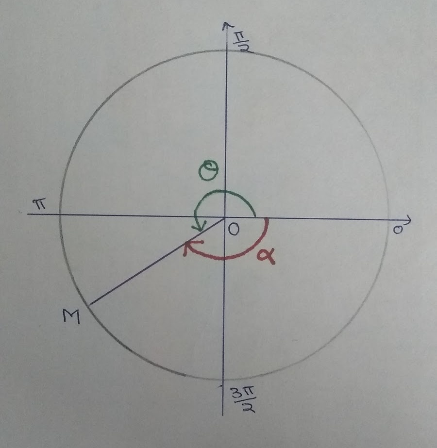
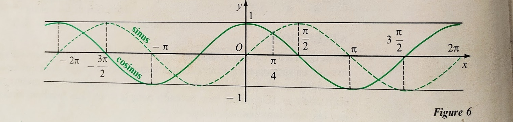
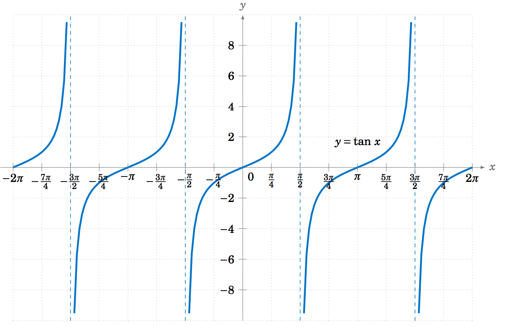
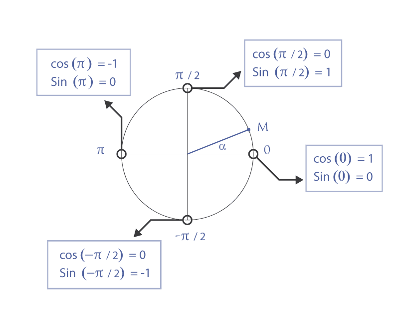
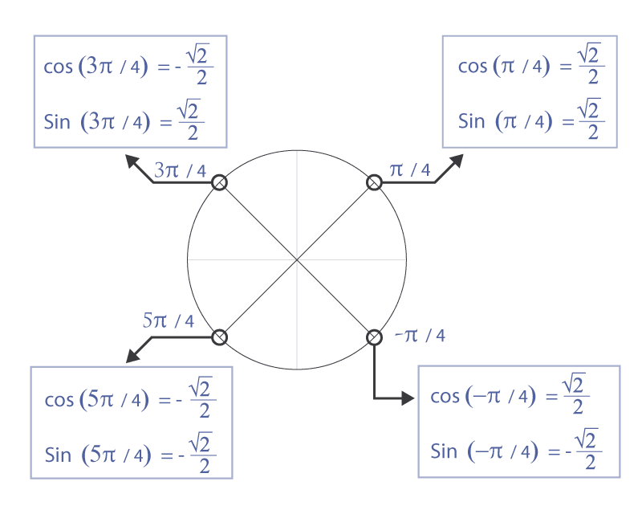
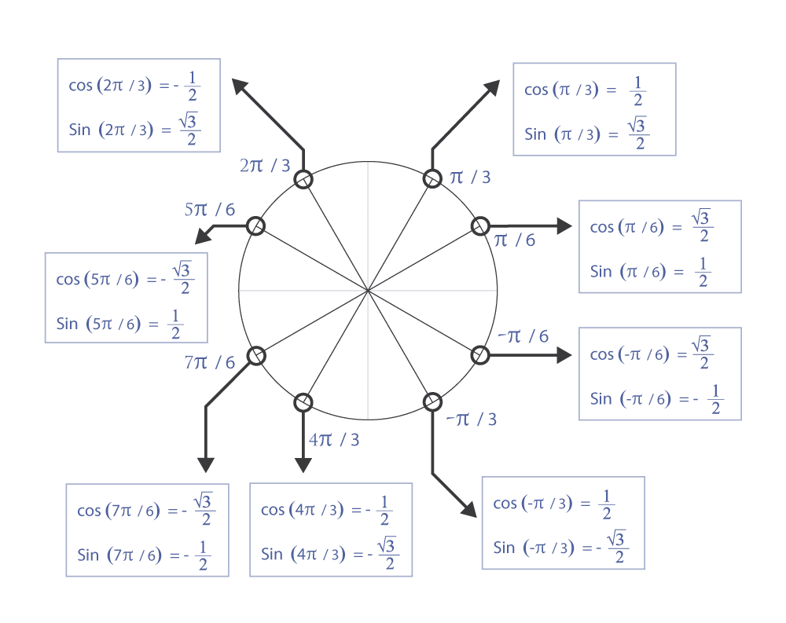
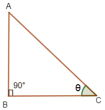
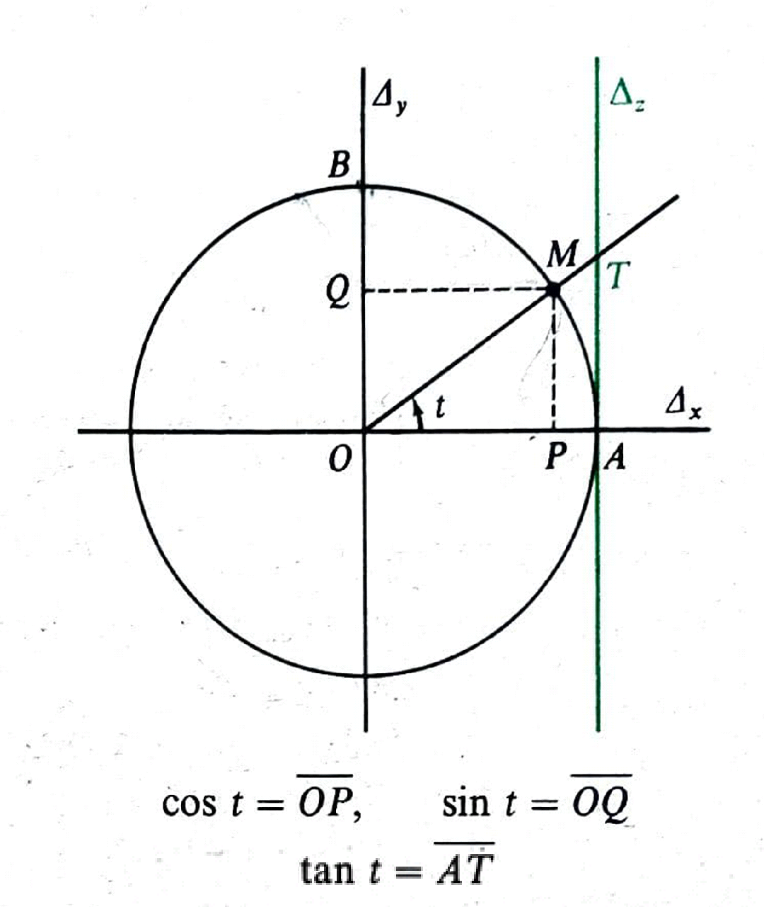

M2 Chapitre: 11 Fonction Trigonométriques
Fonction Cosinus, Sinus et Tangente
Définition 1 : On appelle cosinus et sinus d’un réel \(t\), et l’on note \(cos(t)\) et \(sin(t)\), le cosinus et le sinus d’un angle orientés dont une mesure en radians est \(t\).
Définition 2 : Pour tout réel \(t\) dont le cosinus n’est pas nul, le quotient \(sin (t)\over cos (t)\) est appelé tangente de \(t\), et est noté \(tan (t)\).

Soit \(ABC\) est un triangle rectangle en \(B\). Le cosinus de l'angle â est le rapport des longueurs du côté adjacent à cet angle et de l'hypoténuse. Soit \(a = â\)
\(cos(a) =\) \(côté\) \(adjacent\) \(de\) \(cet\) \(angle\)/\(hypoténuse\) \(=\) \(AB\over AC\)
Le sinus de l'angle \(â\) est le rapport des longueurs du côté opposé à cet angle et de l'hypoténuse. Soit \(a = â\)
\(sin(a) =\) \(côté\) \(opposé\) \(de\) \(cet\) \(angle\)/\(hypoténuse\) \(=\) \(BC\over AC\)
Le tangente de l’angle \(â\) est le rapport des longueurs du côté opposé à cet angle et du côté adjacent à cet angle. Soit \(a = â\).
\(tan(a) =\) \(sin(a)\over cos(a)\) \(=\) \(BC\over AB\)
Truc à Retenir :
\(“Sohcahtoa”\), où \(s\) représente sinus, \(c\) représente cosinus et \(t\) représente tangente. \(o\) représente oppose, \(h\) représente hypoténuse et \(a\) représente adjacent.
Donc, \(soh ⇒ sin =\) \(o\over h\) \(coh ⇒ cos =\) \(a\over h\) \(toa ⇒ tan =\) \(o\over a\)

Soit \(ABC\) un demi triangle rectangle équilatéral, rectangle en \(A\). Soit \(BC = 1\).Comme \(ABC\) est un demi triangle équilatéral, rectangle en \(A\) et l’angle en \(B\) est \(60°\) et l’angle en \(C\) est \(30°\), \(AB\) est demie de \(BC\), donc \(AB = 12\). D’apres le theoreme de pythagore,
\(AB^2 +AC^2 = BC^2 ⇒ AC^2 = BC^2 - AB^2\)
Donc, \(AC =\) \(\sqrt{BC^2 - AB^2}\) \(=\) \(\sqrt{1^2 - 1/4}\)
\(AC =\) \(\sqrt{3\over 4} =\) \(\sqrt{3}\over 2\)
\(cos(Ĉ) = cos(30°) =\) \(AC\over BC\) \(=\) \(\sqrt{3}\over 2\)
\(cos(B) =cos(60°) =\) \(AB\over BC\) \(=\) \(1\over 2\)
\(sin(Ĉ) = sin(30°) =\) \(AB\over BC\) \(=\) \(1\over 2\)
\(sin(B) = sin(60°) =\) \(AC\over BC\) \(=\) \(\sqrt{3}\over 2\)
\(tan(Ĉ) = tan(30°) =\) \(AB\over AC\) \(=\) \(1\over 2\) \(*\) \(2\over \sqrt{3}\) \(=\) \(1\over \sqrt{3}\) \(=\) \(\sqrt{3}\over 3\)
\(tan(B) =tan(60°) =\) \(AC\over AB\) \(=\) \(\sqrt{3}\over 2\) \(*\) \(2\over 1\) \(=\) \(\sqrt{3}\)
Soit \(ABC\) un triangle rectangle isocèle en \(C\). Soit \(AB = 1\). D’apres le theoreme de Pythagore,
\(AC^2 + CB^2 = AB^2\)
Comme \(AC = BC, AC^2 + AC^2 = 2AC^2 = AB^2\)
\(⇒ AC = \sqrt{AB^2\over 2} =\) \(\sqrt{1\over 2} =\) \(1\over \sqrt{2}\) \(=\) \(\sqrt{2}\over 2\)
\(⇒ BC =\) \(\sqrt{2}\over 2\)
\(cos(A) = cos(45°) =\) \(AC\over AB\) \(=\) \(\sqrt{2}\over 2\)
\(sin(A) = sin(45°) =\) \(BC\over AB\) \(=\) \(\sqrt{2}\over 2\)
\(tan(A) = tan(45°) =\) \(BC\over AC\) \(= 1\)

Soit \(PQR\) un triangle rectangle en \(R\).
Soit \(P = θ ⇒ Q = 90 - θ\)
\(sin(P) = sin(θ) =\) \(RQ\over PQ\)
\(cos(Q) = cos(90° - θ) =\) \(RQ\over PQ\)
\(⇒ sin(P) = cos(Q) ⇒ sin(θ) = cos(90° - θ)\)
De même: \(cos(P) = cos(θ) =\) \(PR\over PQ\)
\(sin(Q) = sin(90° - θ) =\) \(PR\over PQ\) \(⇒ cos(θ) = sin(90° - θ)\)
Les radians, les degrés et les grades
Jusqu'à présent, nous avons utilisé des degrés, une mesure des angles, dans notre étude de la géométrie. A partir de maintenant, nous utiliserons une nouvelle mesure pour les angles: radians.
Soit un cercle \(C\) de centre \(O\) et de rayon \(r\). Soit \(A\) et \(B\) deux points sur le cercle, tel que l’arc \(AB\) mesure \(r\). Nous définissons l’angle balayé par l’arc \(AB\), \(\angle AOB = 1\) radian ou \(1\) rad.
Le périmètre de ce cercle \(C\) est \(2\pi r\). Donc, le nombre des arcs \(AB\) mesurant \(r\) qui peuvent être tracé sur le cercle est \(2 \pi r\over r\) \(= 2\pi\), \(\pi \approx 3,14 ⇒ 2\pi \approx 6,28\). Cela veut dire 6 arcs peuvent être tracé complètement plus une petit arc égal a \(0.28 \times r\).

Comme \(2\pi\) arcs peuvent être tracés sur un cercle de rayon \(r\), alors l’angle d’une rotation complète est \(2\pi\). Comme l’angle d’une rotation complète est en degrés \(360° ⇒ 2\pi = 360°\)
Le grade est un autre mesure de l’angle. Nous definisson le suivant: \(2\pi = 400\) grades ou \(400\) gr. Où \(90°\) est divisé en 100 parties et une partie est égale à 1 grade.
Voici la relation entre le degré, le radian et le grade:
\(360° = 2\pi\) rad \(= 400\) gr
| Mesure en Radians |
\(\pi \over 6\) |
|
|
|
|
\(2\pi \over 3\) |
\(5\pi \over 4\) |
|
|
\(3\pi \over 2\) |
|
| Mesure en Degres |
|
40 |
|
60 |
|
|
|
120 |
|
|
420 |
| Mesure en Grades |
|
|
100 |
|
50 |
|
|
|
300 |
|
|
Calculons la premiere colonne de ce tableau.
Comme \(2\pi\) rad \(= 360°\) \(⇒\) \(\pi \over 6\) rad \(=\) \(360° \times \pi \over\ 6\) rad \(\times\) \(1 \over 2\pi rad\) \(= 30°\)
Comme \(2\pi\) rad \(= 400\) gr \(⇒\) \(\pi \over 6\) rad \(=\) \(400gr \times \pi \over\ 6\) rad \(\times\) \(1 \over 2\pi rad\) \(=\) \(100\over 3\) gr
De même façon essayez de calculer les autres.
Voici les résultats:
| Mesure en Radians |
\(\pi \over 6\) |
\(2\pi \over 9\) |
\(\pi \over 2\) |
\(\pi \over 3\) |
\(\pi \over 4\) |
\(2\pi \over 3\) |
\(5\pi \over 4\) |
\(2\pi \over 3\) |
\(3\pi \over 2\) |
\(3\pi \over 2\) |
\(7\pi \over 3\) |
| Mesure en Degres |
30 |
40 |
90 |
60 |
45 |
120 |
225 |
120 |
270 |
270 |
420 |
| Mesure en Grades |
\(100\over 3\) |
\(400\over 9\) |
100 |
\(200\over 3\) |
50 |
\(400\over 3\) |
250 |
\(400\over 3\) |
300 |
300 |
\(1400\over 3\) |
Le Cercle Trigonométrique
Le Cercle Unitaire
 Dans un repère orthonormal, soit Cun cercle de centre \(O(0,0)\) et de rayon \(1\). Soit \(K\) un point sur le cercle, formant un angle avec l’axe des abscisses positive. Soit \(A\) et \(B\) la projection orthogonal du point \(K\) sur l’axe des abscisse et l’axe des ordonnées respectivement.
Dans un repère orthonormal, soit Cun cercle de centre \(O(0,0)\) et de rayon \(1\). Soit \(K\) un point sur le cercle, formant un angle avec l’axe des abscisses positive. Soit \(A\) et \(B\) la projection orthogonal du point \(K\) sur l’axe des abscisse et l’axe des ordonnées respectivement.
\(cos\) \( α =\) \(OA\over OK\) \(=\) \(OA\over 1\) \(= OA\)
\(sin\) \( α =\) \(AK\over OK\) \(=\) \(AK\over 1\) \(= AK = OB\)
On remarque que \(OA\), la projection orthogonal du point \(K\) sur l’axes des abscisse est égale a le cosinus de l'angle formé par rapport à l’axe des abscisse. \(OA = cos α\) De même, \(OB\) la projection orthogonal du point \(K\) sur l’axes de ordonné est égal à le sinus de l’angle forme par rapport à l’axes des abscisse. \(OB = sin α\)
Dans un plan muni d’un repère orthonormal soit \(C\) un cercle de centre \(O(0;0)\) et de rayon \(1\). On appelle ce cercle le cercle trigonométrique, associé à ce repère, et il contient \(A(1;0)\) et \(B(0;1)\).
Quelque soit un point \(M\) sur le cercle \(C\), formant un angle avec l’axe des abscisses. L'abscisse et l'ordonnée du point \(M\) est \(cos α\) et \(sin α\) respectivement.

On définit un sens sur ce cercle, appelé « direct », c'est à dire dans le sens inverse des aiguilles d’une montre. On appelle ce cercle trigonométrique le cercle \(C\) muni du sens direct.
Nous définissons \(0\) rad le mesure d’angle en \(A(1,0)\), et le positive des angles au sens trigonométrique par rapport à l’axes des abscisses positive. Voici les angles remarquable du cercle trigonométrique.
On divise le cercle trigonométrique en quatre quadrants et on les nomme quadrant \(1\), quadrant \(2\), quadrant \(3\), quadrant \(4\) respectivements dans le sens direct. Le quadrant \(1\), quadrant \(2\), quadrant \(3\), quadrant \(4\) sont de \(0\) \(≤\) \(θ\) \(≤\) \(Π\over 2\) , \(Π\over 2\) \(≤\) \(θ\) \(≤\) \(Π\) , \(Π\) \(≤\) \(θ\) \(≤\) \(3Π\over 2\) , \(3Π\over 2\) \(≤\) \(θ\) \(≤\) \(2Π\) respectivement.
Le fonction cosinus, sinus et tangente du cercle unitaire
\(Cos(θ)\) \(=\) OA
et
\(Sin(θ)\) \(=\) OB
Si \(0\) \(≤\) \(θ\) \(≤\) \(Π\over 2\) , \(A\) est sur l’axe des abscisse positive et \(B\) est sur l’axe des ordonnées positive donc OA et OB sont positive ⇒ \(Cos(θ)\) et \(Sin(θ)\) sont positives.
Si \(Π\over 2\) \(≤\) \(θ\) \(≤\) \(Π\) , \(A\) est sur l’axe des abscisse négatif et \(B\) est sur l’axe des ordonnées positive donc OA est négatif et OB est positive ⇒ \(Cos(θ)\) est négatif et \(Sin(θ)\) est positive.
Si \(Π\) \(≤\) \(θ\) \(≤\) \(3Π\over 2\) , \(A\) est sur l’axe des abscisse négatif et \(B\) est sur l’axe des ordonnées négatif donc OA et OB sont négatives ⇒ \(Cos(θ)\) et \(Sin(θ)\) sont négatives.
Si \(3Π\over 2\) \(≤\) \(θ\) \(≤\) \(2Π\) , \(A\) est sur l’axe des abscisse positif et \(B\) est sur l’axe des ordonnées négatif donc OA est positif et OB est négatif ⇒ \(Cos(θ)\) est positive et \(Sin(θ)\) est négatif.

Calculons le cosinus et le sinus des angles remarquable du cercle trigonométrique. Les nombres entre parenthèses hors du cercle dans le diagramme suivant représente le cosinus et le sinus respectivement des angles, \((Cos(θ),Sin(θ))\)
Calculons le tangente des angles remarquables du cercle trigonométrique. Comme \(tan(θ)\) \(=\) \(sin(θ)\over cos(θ)\) :
Si \(0\) \(≤\) \(θ\) \(≤\) \(Π\over 2\) , \(sin(θ)\) et \(cos(θ)\) sont positives donc \(tan(θ)\) est positif
Si \(Π\over 2\) \(≤\) \(θ\) \(≤\) \(Π\) , \(sin(θ)\) est positif et \(cos(θ)\) est négatif donc \(tan(θ)\) est négatif
Si \(Π\) \(≤\) \(θ\) \(≤\) \(3Π\over 2\) , \(sin(θ)\) et \(cos(θ)\) sont négatives donc \(tan(θ)\) est positif
Si \(3Π\over 2\) \(≤\) \(θ\) \(≤\) \(2Π\) , \(sin(θ)\) est négatif et \(cos(θ)\) est positif donc \(tan(θ)\) est négatif
L’angle orienté

Un angle peut être représenté en deux manières. L’une au sens trigonométrique ou sens anti-horaire et l’autre au sens indirect ou au sens horaire. Comme dans le figure, l’angle peut être représenté avec \(θ\) ou avec \(α\).
\(2π = 0, θ = θ - 2π, θ - 2π = - α ⇒ θ = - α\)
| \(θ \) |
\(11π\over 6\) |
\(7π\over 4\) |
\(5π\over 3\) |
\(3π\over 2\) |
\(4π\over 3\) |
\(5π\over 4\) |
\(7π\over 6\) |
π |
\(- α \) |
- \(π\over 6\) |
- \(π\over 4\) |
- \(π\over 3\) |
- \(π\over 2\) |
- \(2π\over 3\) |
- \(3π\over 4\) |
- \(5π\over 6\) |
- \(π\) |
\(cos^2(a) + sin^2(a) = 1\), quel que soit \(a\). Pour la démonstration référer à la section d'épreuves au dessous.
Déduisons que, quel que soit \(a\):
\(-1 ≤ cos(a) ≤ 1\)
\(-1 ≤ sin(a) ≤ 1\)
Comme \(cos^2(a) + sin^2(a) = 1\), quel que soit \(a\), ⇒ \(cos^2(a) = 1- sin^2(a)\)
⇒ \(cos(a) = ±\) \(\sqrt{1- sin2(a)}\)
⇒ \(\sqrt{1- sin2(a)}\) ≥ 0
⇒ \(1- sin^2(a) ≥ 0\)
⇒ \(1 ≥ sin^2(a)\)
\(1 ≥ sin(a) et -1 ≤ sin(a)\)
⇒ \(-1 ≤ sin(a) ≤ 1\) (Q. E. D.)
De même \(-1 ≤ cos(a) ≤ 1\)
Valeurs remarquable
Ce sont les valeurs dont nous devons toujours nous souvenir.
| x en radians |
\(0\) |
\(π\over 6\) |
\(π\over 4\) |
\(π\over 3\) |
\(π\over 2\) |
\(π\) |
| Correspondance en degré |
\(0\) |
\(30\) |
\(45\) |
\(60\) |
\(90\) |
\(180\) |
| cos x |
\(1\) |
\(\sqrt{3}\over 2\) |
\(\sqrt{2}\over 2\) |
\(1\over 2\) |
\(0\) |
- \(1\) |
| sin x |
\(0\) |
\(1\over 2\) |
\(\sqrt{2}\over 2\) |
\(\sqrt{3}\over 2\) |
\(1\) |
\(0\) |
Représentation Graphique:

Les fonctions cosinus et sinus sont périodiques et de période \(2π\). Pour construire leurs courbes représentatives dans un repère, il suffit de tracer les points pour une intervalle d’amplitude \(2π\) et d’ensuite faire des translations de vecteurs \(2π\) et - \(2π\). Les courbes qu’on voit dans cette figure sont appelés des sinusoïdes.
Le fonction tangente

Le fonction tangente a un période de \(π\).
TABLEAU RÉCAPITULATIF:




\(cos(C) =\) \(BC\over AC\)
\(sin(C) =\) \(AB\over AC\)
\(tan(C) =\) \(AB\over BC\)
\(Si\) \(0 < t <\) \(π\over 2\), \(cos(t) > 0, sin(t) > 0, tan(t) > 0\)
\(cos^2 t +sin^2 t = 1\)
Si \(cos(t) ≠ 0 : tan(t) = \) \(sint\over cost\), \(1 + tan^2t = \) \(1\over cos^2t\)

| \(cos(t + 2π) = cos(t)\) |
\(sin(t + 2π) = sin(t)\) |
\(tan(t + 2π) = tan(t)\) |
| \(cos(-t) = cos(t) \) |
\(sin(-t) = - sin(t) \) |
\(tan(-t) = - tan(t) \) |
| \(cos(t + π) = -cos(t)\) |
\(sin(t + π) = -sin(t)\) |
\(tan(t + π) = tan(t)\) |
| \(cos(π - t) = -cos(t)\) |
\(sin(π - t) = sin(t)\) |
\(tan(π - t) = -tan(t)\) |
| \(cos(\) \(π\over 2\) \(-t) = sin(t)\) |
\(sin(\) \(π\over 2\) \(-t) = cos(t)\) |
\(tan(\) \(π\over 2\) \(-t) =\) \(1\over tan(t)\) |
| t |
\(0\) |
\(π\over 6\) |
\(π\over 4\) |
\(π\over 3\) |
\(π\over 2\) |
| cos x |
\(1\) |
\(\sqrt{3}\over 2\) |
\(\sqrt{2}\over 2\) |
\(1\over 2\) |
\(0\) |
| sin x |
\(0\) |
\(1\over 2\) |
\(\sqrt{2}\over 2\) |
\(\sqrt{3}\over 2\) |
\(1\) |
| tan x |
\(0\) |
\(1\over \sqrt{3}\) |
\(1\) |
\(\sqrt{3}\) |
\(non\) \(défini\) |
Preuves :
\(1.\) \(cos^2(a) + sin^2(a) = 1\)
\(cos(a) = \) \(adjacent\over hypoténuse\) \(⇒ cos^2(a) =\) \(adjacent^2\over hypoténuse^2\)
\(sin(a) = \) \(opposé\over hypoténuse\) \(⇒ sin^2(a) =\) \(opposé^2\over hypoténuse^2\)
D'aprѐs le théorème de Pythagore :
\(AC^2 + CB^2 =AB^2\), dans un triangle rectangle en \(C\). Nous avons, \(AC\) comme côté adjacent, \(BC\) comme côté opposé et \(AB\) comme côte hypoténuse.
Donc \(cos^2(a) + sin^2(a) = \) \(adjacent^2\over hypoténuse^2\) + \(opposé^2\over hypoténuse^2\) = \(adjacent^2 + opposé^2\over hypoténuse^2\) = \(hypoténuse^2\over hypoténuse^2\) \(= 1\)
\(2.\) \(1 + tan^2(a) =\) \(1\over cos^2(a)\)
\(1 + tan^2(a) =\) = \(1 + \) \(sin^2(a)\over cos^2(a)\) = \(cos^2(a)\over cos^2(a)\) \(+\) \(sin^2(a)\over cos^2(a)\) = \(sin^2(a) + cos^2(a)\over cos^2(a)\)
D'après le formule au dessus, \(cos^2(a) + sin^2(a) = 1\)
Donc : \(1 + tan^2(a) =\) \(1\over cos^2(a)\)
Exemples :
\(1.\) Calculer le cosinus , le sinus et le tangente des réels suivants :
a. \(145π\over 6\), \(913π\over 4\)
Comme le cosinus et le sinus est périodique de \(2π\) simplifiant les angles en une forme \((x + 2kπ)\). Ou \(k\) est un nombre entier relative.
\(145π\over 6\) \(=\) \(π + 144π\over 6\) \(=\) \(π\over 6\) + \(144π\over 6\) \(=\) \(π\over 6\) + \(24π\) \(=\) \(π\over 6\) + \(2 * 12π\)
\(913π\over 4\) \(=\) \(π + 912π\over 4\) \(=\) \(π\over 4\) + \(912π\over 4\) \(=\) \(π\over 4\) + \(228π\) \(=\) \(π\over 4\) + \(2 * 114π\)
\(cos(\) \(145π\over 6\) \() = \) \(cos(\) \(π\over 6\) + \(2 * 12π\) \() = cos(\) \(π\over 6\) \() = \) \(\sqrt{3}\over 2\)
\(sin(\) \(145π\over 6\) \() = \) \(sin(\) \(π\over 6\) + \(2 * 12π\) \() = sin(\) \(π\over 6\) \() = \) \(1\over 2\)
\(tan(\) \(145π\over 6\) \() = \) \(tan(\) \(π\over 6\) + \(2 * 12π\) \() = tan(\) \(π\over 6\) \() = \) \(\sqrt{3}\over 3\)
\(cos(\) \(913π\over 4\) \() = \) \(cos(\) \(π\over 4\) + \(2 * 114π\) \() = cos(\) \(π\over 4\) \() = \) \(\sqrt{2}\over 2\)
\(sin(\) \(913π\over 4\) \() = \) \(sin(\) \(π\over 4\) + \(2 * 114π\) \() = sin(\) \(π\over 4\) \() = \) \(\sqrt{2}\over 2\)
\(tan(\) \(913π\over 4\) \() = \) \(tan(\) \(π\over 4\) + \(2 * 114π\) \() = tan(\) \(π\over 4\) \() = \) \(1\)